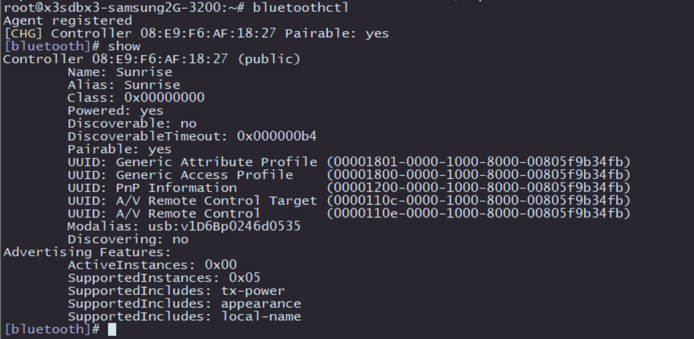

4.3.21. 蓝牙驱动调试指南
4.3.21.1. 驱动配置
CONFIG_BT
CONFIG_CRYPTO_ECDH
CONFIG_BT_HCIUART
BT_HCIUART_BCM
CONFIG_RFKILL

4.3.21.2. 蓝牙使用
状态确认
在运行前，先查看一下当前设备上以下文件是否都存在。
初始化程序：
/usr/bin/startbt6212.sh
驱动和配置：
/lib/firmware/bcm/BCM4343A1.hcd
/lib/modules/4.14.87/hci_uart.ko
/lib/modules/4.14.87/btbcm.ko
/lib/modules/4.14.87/bluetooth.ko
/lib/modules/4.14.87/ecdh_generic.ko
/lib/modules/4.14.87/rfkill.ko
BlueZ程序：
/usr/bin/dbus-daemon
/sbin/bluetoothd
/usr/bin/bluetoothctl
/usr/bin/hciattach
/usr/bin/hciconfig
/usr/bin/hcidump
/usr/bin/hcitool
dbus和蓝牙配置文件：
/etc/bluetooth/main.conf
/etc/dbus-1/system.d/bluetooth.conf
/etc/dbus-1/system.d/obexd.conf
初始化
执行以下脚本程序完成初始化：
startbt6212.sh
这个脚本完成以下工作：
复位蓝牙
创建
messagebus用户和用户组，dbus-daemon程序运行时需要使用该用户运行
brcm_patchram_plus完成蓝牙的驱动加载和固件加载循环检查
/sys/class/bluetooth/hci0目录是否存在，确认蓝牙驱动已经正常运行出现 Done setting line discpline 表示蓝牙启用成功
执行
hciconfig hci0 up完成蓝牙的Link Up执行
hciconfig hci0 piscan进行蓝牙扫描，本步骤可以根据情况去掉运行
dbus-daemon服务运行
bluetoothd，将蓝牙相关的守护进程启用并放在后台
执行成功后，确认以下进程是否正常运行：
配对连接
执行bluetoothctl进入交互模式下的蓝牙配置界面，出现了类似下图的设备信息表示蓝牙被识别到了，然后用show来查看蓝牙信息，留意蓝牙的powered和discoverable状态。

执行 power on 使能蓝牙，如下图所示：
为了能够使蓝牙被附近的设备发现，需要执行discoverable on打开蓝牙可发现属性，如下图所示：
此时使用手机或者电脑扫描蓝牙就可以发现 Sunrise 这个名称的蓝牙设备：
接下来测试蓝牙的主动扫描功能，在bluetoothctl的交互界面输入scan on即可打开主动扫描，它会周期性地打印附近的设备，可以看到已经发现了我的手机设备，scan off关闭扫描功能并汇总打印扫描到的蓝牙设备：
然后就是和其他蓝牙的配对：
配对命令：
pair [targetMAC]，输入该命令后，根据提示输入yes，对端蓝牙设备选择配对选项完成配对。配对成功后可以使用
trust [targetMAC]来让下次自动连接
经过以上操作后，蓝牙的扫描、配对的基本功能就完成了，如需使用更多功能，可查阅 BlueZ的官方帮助说明。
4.3.21.3. 其他版本的驱动
针对地平线发布的V0508 和V0807等版本的SDK，使用蓝牙的方式有一点区别，请按照以下方式操作。
驱动下载
备注：仅V0508和V0807版本需要额外下载驱动
从 X3M附加工具包 的 AP6212 目录下，下载BlueTooth的驱动（bluetooth_drivers）和AP6212固件文件（brcm.zip）
安装固件：
mount -o rw,remount /
tar -xvf brcm.tar.gz
cp brcm /lib/firmware/ -rf
首先复位BlueTooth:
echo 23 > /sys/class/gpio/export
echo out > /sys/class/gpio/gpio23/direction
echo 0 > /sys/class/gpio/gpio23/value
sleep 0.5
echo 1 > /sys/class/gpio/gpio23/value
加载BlueTooth驱动（注意使用正确的版本）：
cd bluetooth_drivers/V0508
insmod ecdh_generic.ko
insmod rfkill.ko
insmod bluetooth.ko
insmod btbcm.ko
insmod hci_uart.ko
查看驱动：
[ 384.314361] Bluetooth: Core ver 2.22
[ 384.314424] NET: Registered protocol family 31
[ 384.314428] Bluetooth: HCI device and connection manager initialized
[ 384.314442] Bluetooth: HCI socket layer initialized
[ 384.314450] Bluetooth: L2CAP socket layer initialized
[ 384.314493] Bluetooth: SCO socket layer initialized
[ 385.570248] Bluetooth: HCI UART driver ver 2.3
[ 385.570255] Bluetooth: HCI UART protocol H4 registered
[ 385.570423] Bluetooth: HCI UART protocol Broadcom registered
BlueTooth使用
从 X3M附加工具包 的 AP6212 目录下，下载BlueTooth工具包 bt_tools.tar.gz
上传工具包到开发板上并解压安装：
mount -o rw,remount /
tar -xvf bt_tools.tar.gz -C /usr
初始化蓝牙：
brcm_patchram_plus --enable_hci --no2bytes --tosleep 200000 --baudrate 460800 --patchram /lib/firmware/brcm/bcm43438a1.hcd /dev/ttyS1 &
# 持续检查 /sys/class/bluetooth/hci0 文件是否生成,大概需要10秒左右
ls /sys/class/bluetooth/hci0
hciconfig a
hci0: Type: Primary Bus: UART
BD Address: B0:02:47:A6:03:00 ACL MTU: 1021:8 SCO MTU: 64:1
DOWN
RX bytes:612 acl:0 sco:0 events:30 errors:0
TX bytes:398 acl:0 sco:0 commands:30 errors:0
Features: 0xbf 0xfe 0xcf 0xfe 0xdb 0xff 0x7b 0x87
Packet type: DM1 DM3 DM5 DH1 DH3 DH5 HV1 HV2 HV3
Link policy: RSWITCH SNIFF
Link mode: SLAVE ACCEPT
配置蓝牙：
hciconfig hci0 up
hciconfig hci0 name hobot-BT
hciconfig hci0 reset
hciconfig hci0 piscan
hciconfig a
hci0: Type: Primary Bus: UART
BD Address: B0:02:47:A6:03:00 ACL MTU: 1021:8 SCO MTU: 64:1
UP RUNNING PSCAN ISCAN
RX bytes:1857 acl:0 sco:0 events:93 errors:0
TX bytes:1455 acl:0 sco:0 commands:93 errors:0
Features: 0xbf 0xfe 0xcf 0xfe 0xdb 0xff 0x7b 0x87
Packet type: DM1 DM3 DM5 DH1 DH3 DH5 HV1 HV2 HV3
Link policy: RSWITCH SNIFF
Link mode: SLAVE ACCEPT
Name: 'hobot-BT'
Class: 0x000000
Service Classes: Unspecified
Device Class: Miscellaneous,
HCI Version: 4.0 (0x6) Revision: 0x108
LMP Version: 4.0 (0x6) Subversion: 0x2209
Manufacturer: Broadcom Corporation (15)
扫描：
hcitool scan
Scanning ...
48:51:C5:72:70:80 LIYAQIANG